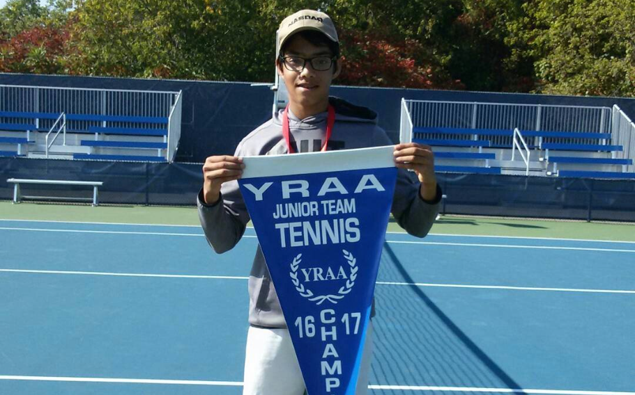

Who Am I?

I'm from Vaughan, Ontario. I was first introduced to coding in high school, and I've never looked back. I enjoy problem-solving and am fascinated by the various ways it can be applied to software development. As a recent Computer Science graduate from Queen's University, I'm always thinking about the future, and I strive to make meaningful contributions in a positive environment.
My Career
I have had the privilege of taking on various roles at companies like SmileCDR, Ericsson, and Manulife. I have always worked with teams in an Agile manner, using SDLC practices to complete objectives. I've been fortunate to connect with stakeholders to gather customers requirements for tasks, and have learned various technologies to add to my skillset. Feel free to check out my resume to see more about my experience and skillset.
Hobbies
I enjoy plenty of activities outside of coding. I like to play sports, my favourite being tennis!
I've been playing tennis since I was 7 years old, and have enjoyed training, competing, and watching!
Music has been a great addition to my past-time activities since I was a teenager. I enjoy listening to music in my
free time and playing guitar.